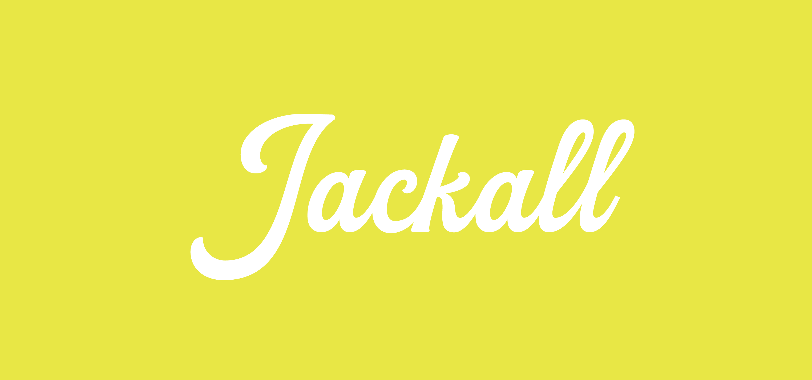

Learn what to use and where it fits.
Workshops, readiness audits, prompt training, and adoption guidance for owners and teams who want useful AI without the hype spiral.

AI systems / creative operations / brand intelligence
An AI-enabled creative company that helps teams find the right use cases, build practical workflows, and ship the websites, content, visuals, and marketing systems behind real growth.
AI readiness audit
We map the work your team repeats, flag risk areas, and rank the first AI workflows by value, effort, and confidence.
system Crawl current site, inventory assets, identify reusable proof.
model Match AI use cases to content, proposals, website, and knowledge work.
output Prioritized AI + creative roadmap ready for implementation.
AI operating layer
The new Jackall offer should look and feel like a practical AI company: audits, agents, prompt systems, content engines, training, governance, and creative execution tied together in one operating rhythm.
Recommended build
Turn brand voice, offers, proof, FAQs, and campaign ideas into a repeatable workflow for posts, email, pages, and sales material.
What we help you do
The current Jackall promise is still here: broad creative support for companies that cannot hire a full internal department. The new site puts practical AI guidance at the front of that relationship.
Workshops, readiness audits, prompt training, and adoption guidance for owners and teams who want useful AI without the hype spiral.
Map the work your team repeats, find the friction, and design AI-assisted systems for documents, content, proposals, and internal knowledge.
Websites, brand messaging, photography, video, social content, proposals, print, and marketing production organized into a real plan.
Practical AI consulting
Jackall Creative helps businesses choose sensible AI use cases, write safe team guidelines, and create workflows that fit the tools and habits they already have.
 AI + Creative OS
AI + Creative OS


Creative department support
Too many companies need the output of a creative department before they can afford to hire one. Jackall gives you senior creative thinking, AI workflow guidance, and hands-on production without the full-time overhead.
Selected proof
The current portfolio already spans architecture, construction, websites, brand systems, proposals, videos, and local business marketing. The rebuild uses that history as proof for the broader AI-enabled creative department offer.

Visual identity, site planning, proposal support, document design, and recurring content systems.
Images that help people understand space, story, and use.

Clear, useful web experiences planned around the way customers actually look for information.
How to work together
Start with a focused AI workshop, a defined project, or a longer creative department relationship. Each path leads to practical deliverables.
Train the team, surface practical opportunities, and leave with a first set of usable workflows.
A defined website, brand, AI, photography, video, marketing, or document project with clear deliverables.
A minimum three-month partnership for companies with a backlog of creative and marketing needs.
Move away from expensive site platforms with a fast, organized static website ready for Cloudflare Pages.